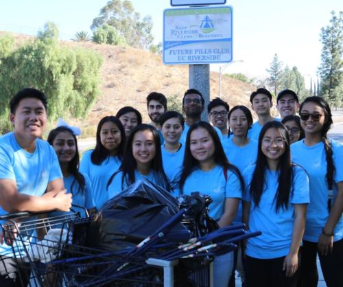
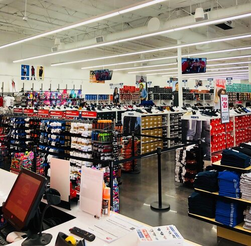
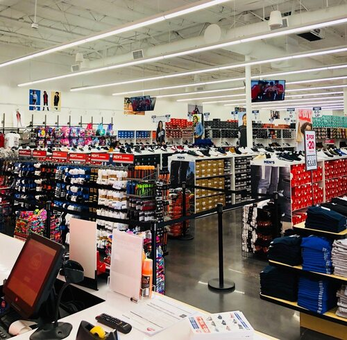

Giselle Herrera
I am a fourth year student studying biochemistry at the University of California, Riverside. I’ve taken a variety of courses like Chemistry, Biology, Organic Chemistry, Physical Biochemistry and Plant Pharmacology. Being exposed to these different courses has made it hard for me to choose a career and how I want to use my degree in the future. Being a first generation student is hard as I have to learn as I go. There is no one I can look back at to see how they did it. This is why I believe exposing yourself to a different environment is important as we can always learn from each other and help each other. I believe that through first hand experiences we can be able to determine what we like and don’t. I have no definite plan but after graduation I plan to become a Pharmacist Technician at my nearest pharmacy to gain experience in the pharmacy field. To be able to accomplish this I am currently studying for the PTCB Exam to be able to get my license. Apart from being a full time student I have 1 year experience in retail. Throughout this year I was able to interact with different customers and provide my service to make their visit enjoyable. I also handled money when I was a cashier; I had to make sure to give the exact change and ask for their rewards card while being welcoming. I also learned how to answer the phone when other stores would call as well as take shoe checks. I was able to memorize the different sections in the shoe store and was able to point out where a shoe was located. Apart from that I believe I have gathered different useful skills throughout my years in college. Time management would be a big one as it can be hard to balance being a full time student while maintaining a job. I have learned how to set up time for studying as well as for other activities and work. I have worked on my clear communication when it comes to emailing professors or TA’s to ask questions about the course. Although I don’t have much experience, I am always willing to learn and adapt to new environments.
Experience
Sales Floor Team Member
• Responsible for checking out customers
• Keep an organize section
• Stay attentative to customers
Active Member
• Biweekly Meetings
• Street Clean Ups
• Learn more about the Pharmacy Field through different guest in the field
Volunteer
• Worked 3-4 hour shifts in the hospital’s Emergency Department
• Arranged stockroom, and restock supplies to ensured it was organized for easy access for nurses and doctors
• Directed patients to appropriate locations/ rooms
Education
University of California, Riverside
Portfolio

.png)

